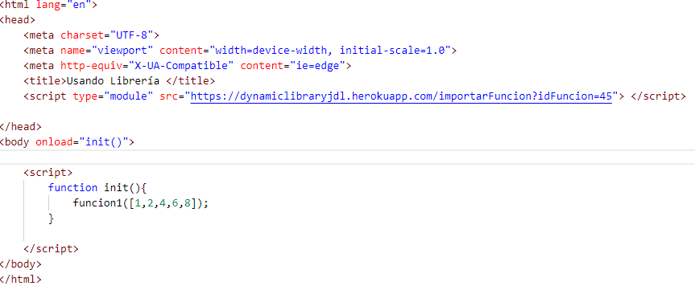
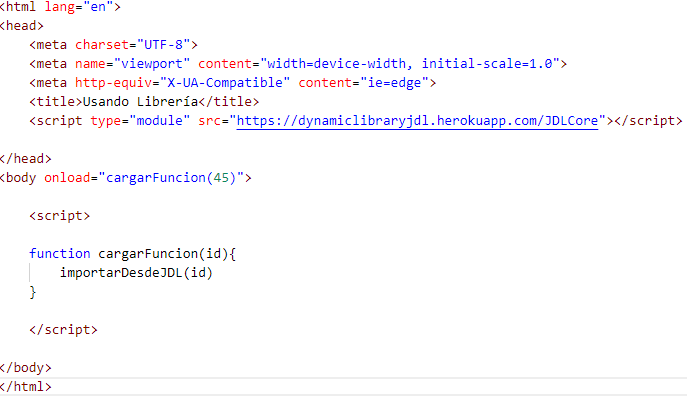

Importación del núcleo de la librería
El núcleo de la librería consta básicamente de una función que permite cargar las funciones deseadas. Dicha
función tiene como nombre
importarDesdeJDL . A continuación
se presenta un ejemplo de uso:

En la imagen anterior se puede visualizar la importación del núcleo de la librería. Y en el ejemplo se está
importando la función con el identificador 45.
Básicamente se requiere una etiqueta script cuyo valor en el atributo src sea
https://dynamiclibraryjdl.herokuapp.com/JDLCore . Esto
cargará la función
importarDesdeJDL que recibe como parámetros los identificadores de las funciones
a importar.
Se recomienda utilizar la función
importarDesdeJDL una vez que se tiene la seguridad de que la página se ha cargado totalmente. De
lo contrario es posible que la función aún no se haya cargado y si se intenta utilizar se obtenga un error debido a que
se intenta referenciar a una función que no existe.
NOTA: Si se requiere importar más de una función se debe llamar a la función de la siguiente manera
importarDesdeJDL( idFuncion, idFuncion, idFuncion ).
Importación individual de funciones
La importación individual de funciones se realiza a través de un link que se debe agregar al atributo src de una etiqueta
script. A continuación se presenta un ejemplo de uso:

En el ejemplo la función a importar es aquella cuyo identificador es igual a 45. El nombre de la función importada es
funcion1 y debe utilizarse únicamente si la página se ha cargado por completo para tener mayor seguridad con respecto
a que la función se cargó de manera correcta en la página. La función importada procesa un arreglo y retorna un valor
que para fines de la documentación no posee relevancia.